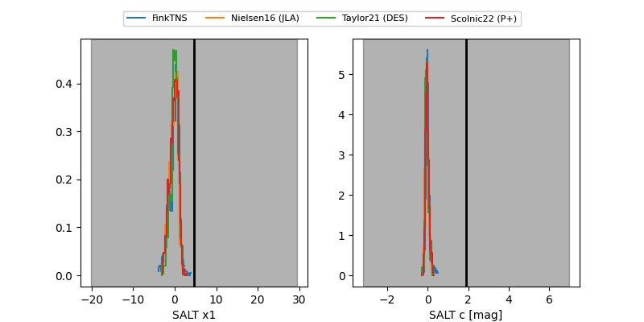

FINK: ZTF25abrafuq
Lasair: ZTF25abrafuq
ALeRCE: ZTF25abrafuq
ZTF25abrafuq (ztf,fink)
equatorial (ra, dec) = (26.9660,-14.45606)
galactic (l, b) = (171.8080,-71.74149)

last ztfg=19.91
3 ztfg detections